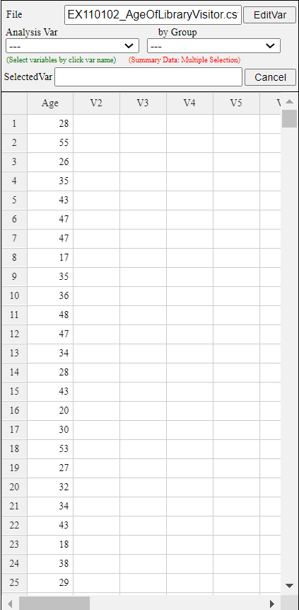
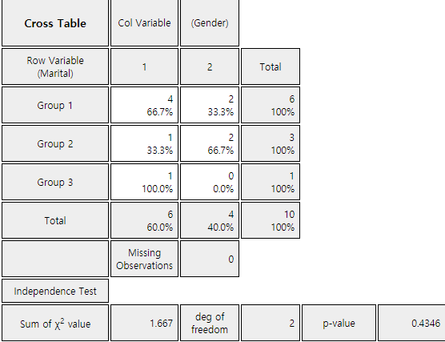

The hypothesis tests that we have studied from Chapter 7 to Chapter 10 are for continuous data. In this chapter, we describe testing hypothesis for categorical data.
Section 11.1 describes the goodness of fit test for the frequency table of categorical data.
Section 11.2 describes the independence and homogeneity tests for the contingence table of two categorical data.
The frequency table of categorical data discussed in Chapter 4 counts the frequency of possible values of a
categorical variable. If this frequency table is for sample data from a population, we are curious what would be
the frequency distribution of the population. The goodness of fit test is a test on the hypothesis that the
population follows a particular distribution based on the sample frequency distribution. In this section, we
discuss the goodness of fit test for categorical distributions (Section 11.1.1) and the goodness of fit test for
continuous distribution (Section 11.1.2).
11.1.1 Goodness of Fit Test for Categorical Distribution
Consider the goodness of fit test for a categorical distribution using the example below.
Example 11.1.1
The result of a survey of 150 people before a local election to find out the approval ratings of
three candidates is as follows. Looking at this frequency table alone, it seems that A candidate
has a 40 percent approval rating, higher than the other candidates. Based on this sample survey,
perform the goodness of fit test whether three candidates have the same approval rating or not.
Use 『eStatU』 with the 5% significance level.
Table 11.1.1 Frequency table of survey result in an election.
Candidate
Number of Supporters
Percent
A
60
40.0％
B
50
33.3％
C
40
25.7％
Total
150
100.0%
Answer
Assume each of candidate A, B, and C’s approval rating is \(p_1 , p_2 , p_3\) respectively. The hypothesis for this problem is as follows:
\(\small H_0\) : The three candidates have the same approval rating. (i.e.,\(p_1 = p_2 = p_3 = \frac{1}{3}\) )
\(\small H_1\) : The three candidates have different approval ratings.
If the null hypothesis \(\small H_0\) is true that the three candidates have the same approval rating, each candidate
will have 50 (= 150\(\times \frac{1}{3}\) ) supporters out of total 150 people. It is referred to as the ‘expected frequency’ of each
candidate when \(\small H_0\) is true. For each candidate, the number of observed supporters in the sample is called the
'observed frequency'. If \(\small H_0\) is true, the observed and expected number of supporters can be summarized as the
following table.
Candidate
Observed frequency (denoted as \(O_i\))
Expected frequency (denoted as \(E_i\))
A
\(O_1 = 60\)
\(E_1 = 50\)
B
\(O_2 = 50\)
\(E_2 = 50\)
C
\(O_3 = 40\)
\(E_3 = 50\)
Total
150
150
If \(\small H_0\) is true, the observed frequency (\(\small O_i\)) and the expected frequency (\(\small E_i\)) will coincide.
Therefore, in order to test the hypothesis, a statistic which uses the squared difference between \(\small O_i\) and \(\small E_i\)
is used. Specifically, the statistic to test the hypotheses is as follows:
If the observed value of this test statistic is close to zero, it can be considered that \(\small H_0\) is true,
because \(\small O_i\) is close to \(\small E_i\). If the observed value is large, \(\small H_0\) will be rejected.
The question is, 'How large value of the test statistic would be considered as the statistically significant one?'
It can be shown that this test statistic approximately follows the chi-square distribution with \(k-1\) degrees
of freedom if the expected frequency is large enough. Here \(k\) is the number of categories (i.e., candidates)
in the table and it is 3 in this example. Therefore, the decision rule to test the hypotheses is as follows:
‘If \(\chi_{obs}^2 > \chi_{k-1; α}^2\) , reject \(\small H_0\), else do not reject \(\small H_0\)’
The statistic \(\chi_{obs}^2\) can be calculated as follows:
Therefore, \(\small H_0\) cannot be rejected. In other words, although the above sample frequency table shows that the
approval ratings of the three candidates differ, this difference does not provide sufficient evidence to
conclude that the three candidates have different approval ratings.
Since sample approval ratings of each candidate are \(\hat p_1 = \frac{60}{150}\) = 0.40,
\(\hat p_2 = \frac{50}{150}\) = 0.33, \(\hat p_3 = \frac{40}{150}\) = 0.27, the 95% confidence intervals
for the population proportion of each candidate's approval rating using the formula
(\( {{\hat p}} ± 1.96 \sqrt { \hat p (1- \hat p ) / n } \)) (refer Chapter 6.4) are as follows:
The overlapping of the confidence intervals on the three candidates' approval ratings means that
one candidate's approval rating is not completely different from the other.
In the data input box that appears by selecting the [Goodness of Fit Test] of 『eStatU』, enter the 'Observed
Frequency' and 'Expected Probability' data as shown in <Figure 11.1.1>. After entering the data,
select the significance level and click [Execute] button to calculate the 'Expected Frequency' and to see
the result of the chi-square test. Be sure that this chi-square goodness of fit test should be applied when
the expected frequency of each category is at least 5.
[]
<Figure 11.1.2> 『eStatU』 Chi-square Goodness of Fit Test
Consider a categorical variable X which has \(k\) number of possible values \(x_1 , x_2 , ... , x_k\) and
their probabilities are \(p_1 , p_2 , ... , p_k\)
respectively. In other words, the probability distribution for the categorical variable X is as follows:
\(X\)
\(P(X = x)\)
\(x_1\)
\(p_1\)
\(x_2\)
\(p_2\)
\(\cdots\)
\(\cdots\)
\(x_k\)
\(p_k\)
Total
1
When random samples are collected from the population of the categorical random variable X and their
observed frequencies are (\(O_1 , O_2 , ... , O_k \)), the hypothesis to test the population probability
distribution of (\(p_1 , p_2 , ... , p_k \)) = (\(p_{10} , p_{20} , ... , p_{k0} \)) is as follows:
\(H_0\) : Distribution of (\(O_1 , O_2 , ... , O_k \)) are from the distribution (\(p_1 , p_2 , ... , p_k \)) = (\(p_{10} , p_{20} , ... , p_{k0} ) \)
\(H_1\) : Distribution of (\(O_1 , O_2 , ... , O_k \)) are not from the distribution (\(p_1 , p_2 , ... , p_k \)) = (\(p_{10} , p_{20} , ... , p_{k0} ) \)
If the total number of samples \(n\) is large enough, the above hypothesis can be tested using the following
chi-square test statistic as follows:
$$
\text{‘If } \chi_{obs}^{2} = \sum_{i=1}^{k} \frac { (O_{i} - E_{i} )^{2}} {E_{i}} > \chi_{k-m-1 ; α}^{2}, \text{ then reject } H_0 ’
$$
Here, (\(E_1 , E_2 , ... , E_k \)) = (\(np_{10} , np_{20} , ... , np_{k0} \)) are expected frequencies,
\(m\) is the number of population parameters estimated from the sample data. In
[Example 11.1.1], since there was not a population parameter estimated from the sample, \(m\) = 0 .
Goodness of Fit Test
Consider a categorical variable \(X\) which has \(k\) number of possible values \(x_1 , x_2 , ... , x_k \)
and there probabilities are \(p_1 , p_2 , ... , p_k \) respectively.
Let observed frequencies for each value of \(X\) from \(n\) samples are (\(O_1 , O_2 , ... , O_k \)),
expected frequencies for each value of \(X\) from \(n\) samples are
\( ( E_1 , E_2 , ... , E_k )\) = \((np_{10} , np_{20} , ... , np_{k0} ) \) and the significance level is α.
Hypothesis:
\(H_0\) : Distribution of (\(O_1 , O_2 , ... , O_k \)) follows \( (p_{10} , p_{20} , ... , p_{k0} )\)
\(H_1\) : Distribution of (\(O_1 , O_2 , ... , O_k \)) does not follow \((p_{10} , p_{20} , ... , p_{k0} )\)
Decision Rule:
‘If \( \chi_{obs}^{2} = \sum_{i=1}^{k} \frac { (O_{i} - E_{i} )^{2}} {E_{i}} > \chi_{k-m-1 ; α}^{2}\), then reject \(H_0\) ’
where \(m\) is the number of population parameters estimated from the samples.
\(\clubsuit\) In order to use the chi-square Goodness of Fit test, all expected frequencies \(E_i\)
should be greater than 5.
\(\clubsuit\) A category which has an expected frequency less than 5 can be merged with other category.
Practice 11.1.1
Market shares of toothpaste A, B, C and D are known to be 0.3, 0.6, 0.08, and 0.02 respectively.
The result of a survey of 100 people for the toothpaste brands are as follows. Can you conclude
from these data that the known market share is incorrect? Use 『eStatU』. \(\alpha\) = 0.05.
Brand
Number of Customers
A
192
B
342
C
44
D
22
Total
600
11.1.2 Goodness of Fit Test for Continuous Distribution
The goodness of fit test for categorical data using the chi-square distribution can also be used for
continuous data. The following is an example of the goodness of fit test in which data are derived from a
population of a normal distribution. The parametric statistical tests from Chapter 6 to Chapter 9 require the
assumption that the population is normally distributed and the goodness of fit test in this section can be used
to test for normality.
Example 11.1.2
Ages of 30 people who visited a library in the morning are as follows. Test the hypothesis that
the population is normally distributed at the significance level of 5%.
28 55 26 35 43 47 47 17 35 36 48 47 34 28 43
20 30 53 27 32 34 43 18 38 29 44 67 48 45 43
[Ex] ⇨ eBook ⇨ EX110102_AgeOfLibraryVisitor.csv
Answer
Age is a continuous variable, but you can make a frequency distribution by dividing possible values into
intervals as we studied in histogram of Chapter 3. It is called a categorization of the continuous data.
Let's find a frequency table which starts at the age of 10 with the interval size of 10. The histogram
of 『eStat』 makes this frequency table easy to obtain.
If you enter the data as shown in <Figure 11.1.3>, click the histogram icon and select Age from the
variable selection box, then the histogram as <Figure 11.1.4> will appear.

<Figure 11.1.3> Data input at 『eStat』
<Figure 11.1.4> Default histogram of age
If you specify 'start interval' as 10 and 'interval width' as 10 in the options window below the histogram,
the histogram of <Figure 11.1.4> is adjusted as <Figure 11.1.5>. If you click [Frequency Table]
button, the frequency table as shown in <Figure 11.1.6> will appear in the Log Area. The designation
of interval size can be determined by a researcher.
<Figure 11.1.5> Adjusted histogram of age
<Figure 11.1.6> Frequency table of the adjusted histogram
Since the normal distribution is a continuous distribution defined at \(-\infty \lt x \lt \infty\) , the frequency table of
<Figure 11.1.6> can be written as follows:
Table 11.1.2 Frequency table of age with adjusted interval
Interval id
Interval
Observed frequency
1
\( X < 20 \)
2
2
\(20 \le X < 30\)
6
3
\(30 \le X < 40\)
8
4
\(40 \le X < 50\)
11
5
\(50 \le X < 60\)
2
6
\( X \ge 60 \)
1
The frequency table of sample data as Table 11.1.2 can be used to test the goodness of fit whether the
sample data follows a normal distribution using the chi-square distribution. The hypothesis of this problem
is as follows:
\(\small H_0\): Sample data follows a normal distribution
\(\small H_1\): Sample data does not follow a normal distribution
This hypothesis does not specify what a normal distribution is and therefore, the population mean \(\mu\) and the
population variance \(\sigma^2\) should be estimated from sample data. Pressing the 'Basic Statistics' icon on the main
menu of 『eStat』 will display a table of basic statistics in the Log Area, as shown in
<Figure 11.1.7>. The sample mean is 38.000 and the sample standard deviation is 11.519.
<Figure 11.1.7> Descriptive statistics of age
Hence, the above hypothesis can be written in detail as follows:
\(\small H_0\): Sample data follows \(N(38.000, 11.519^2 )\)
\(\small H_1\): Sample data does not follow \(N(38.000, 11.519^2 )\)
In order to find the expected frequency of each interval when \(\small H_0\) is true, the expected probability of each
interval is calculated first using the normal distribution \(\small N(38.000, 11.519^2 )\) as follows. The normal distribution module
of 『eStatU』 makes it easy to calculate this probability of an interval. At the normal distribution module
of 『eStatU』, enter the mean of 38.000 and the standard deviation of 11.519. Click the second radio button
of P(X < x) type and enter 20, then press the [Execute] button to calculate the probability as shown in
<Figure 11.1.8>.
<Figure 11.1.8> Calculation of normal probability using 『eStatU』
Similarly you can calculate the following probabilities.
\(P(20 \le X \lt 30) = P(\frac{20-38.000}{11.519} \le Z \lt \frac {30-38.000}{11.519} ) = P(-1.563 \le Z \lt -0.695) = 0.185\)
\(P(30 \le X \lt 40) = P(\frac{30-38.000}{11.519} \le Z \lt \frac {40-38.000}{11.519} ) = P(-0.695 \le Z \lt 0.174) = 0.325\)
\(P(40 \le X \lt 50) = P(\frac{40-38.000}{11.519} \le Z \lt \frac {50-38.000}{11.519} ) = P( 0.174 \le Z \lt 1.042) = 0.282\)
\(P(50 \le X \lt 60) = P(\frac{50-38.000}{11.519} \le Z \lt \frac {60-38.000}{11.519} ) = P( 1.042 \le Z \lt 1.910) = 0.121\)
\(P( X \ge 60) = P( Z \ge \frac {60-38.000}{11.519} ) = P( Z \ge 1.910) = 0.028\)
Expected frequency can be calculated by multiplying the sample size of 30 to the expected probability of
each interval obtained above. The observed frequencies, expected probabilities, and expected frequencies
for each interval can be summarized as the following table.
Table 11.1.3 Observed and expected frequencies of each interval of distribution
Interval id
Interval
Observed frequency
Expected probability
Expected frequency
1
\( X < 20 \)
2
0.059
1.77
2
\(20 \le X < 30\)
6
0.185
5.55
3
\(30 \le X < 40\)
8
0.325
9.75
4
\(40 \le X < 50\)
12
0.282
8.46
5
\(50 \le X < 60\)
2
0.121
3.63
6
\( X \ge 60 \)
1
0.028
0.84
Since the expected frequencies of the 1st and 6th interval are less than 5, the intervals should be
combined with adjacent intervals for testing the goodness of fit using the chi-square distribution as
Table 11.1.4. The expected frequency of the last interval is still less than 5, but, if we combine this
interval, there are only three intervals, we demonstrate the calculation as it is. Note that,
due to computational error, the sum of the expected probabilities may not be exactly
equal to 1 and the sum of the expected frequencies may not be exactly 30 in Table 11.1.4.
Table 11.1.4 Revised table after combining interval of small expected frequency
Interval id
Interval
Observed frequency
Expected probability
Expected frequency
1
\( X < 30 \)
8
0.244
7.32
2
\(30 \le X < 40\)
8
0.325
9.75
3
\(40 \le X < 50\)
11
0.282
8.48
4
\( X \ge 50 \)
3
0.149
4.47
Total
30
1.000
30.00
The test statistic for the goodness of fit test is as follows:
Since the number of intervals is 4, \(k\) becomes 4, and \(m\)=2, because two population parameters \(\mu\) and \(\sigma^2\) are estimated
from the sample data. Therefore, the critical value is as follows:
The observed test statistic is less than the critical value, we can not reject the null hypothesis that the
sample data follows \(\small N(38.000, 11.519^2 )\) .
Test result can be verified using [Categorical: Goodness of Fit Test] in 『eStatU』. In the Input box that appears by
selecting the module, enter the data for 'Observed Frequency' and 'Expected
Probability' in Table 11.1.4, as shown in <Figure 11.1.9>. After entering the data, select the
significance level and press the [Execute] button to calculate the 'expected frequency' and produce a
chi-square test result as in <Figure 11.1.10>.
[]
<Figure 11.1.10> Chi-square goodness of fit test using 『eStatU』
Practice 11.1.2(Otter length)
Data of 30 otter lengths can be found at the following location of 『eStat』.
[Ex] ⇨ eBook ⇨ PR110102_OtterLength.csv
Test the hypothesis that the population is normally distributed at the significance level of 5% using 『eStat』.
The contingency table or cross table discussed in Chapter 4 was a table that placed the possible values of
two categorical variables in rows and columns, respectively, and examined frequencies of each cell in which the
values of the two variables intersect. If this contingency table is for sample data taken from a population, it
is possible to predict what would be the contingency table of the population. The test for the contingency table
is usually an analysis of the relation between two categorical variables and it can be divided into the
independence test and homogeneity test according to the sampling method for obtaining the data.
11.2.1 Independence Test
The independence test of the contingency table is to investigate whether two categorical variables are
independent when samples are extracted from one population. Consider the independence test with the following
example.
Example 11.2.1
In order to investigate whether college students who are wearing glasses are independent by gender,
a sample of 100 students was collected and its contingency table was prepared as follows:
Table 11.2.1 Wearing glasses by gender
Wear Glasses
No Glasses
Total
Men
40
10
50
Women
20
30
50
Total
60
40
100
[Ex] ⇨ eBook ⇨ EX110201_GlassesByGender.csv.
1) Using 『eStat』, draw a line graph of the use of eyeglasses by men and women.
2) Test the hypothesis at 5% of the significance level to see if the gender variable and the wearing of
glasses are independent or related to each other.
3) Check the result of the independence test using 『eStatU』.
Answer
1) Enter data in 『eStat』 as shown in <Figure 11.2.1>.
<Figure 11.2.1> Data input
Select 'Line Graph' icon from the main menu. If you click variables ‘Gender’, ‘Glasses’, ‘NoGlasses’
one by one, then a line graph as shown in <Figure 11.2.2> will appear in the Graph Area. If you look
at the line graph, you can see that the ratio of wearing glasses for men and women are different. For men,
there are many male students who wear glasses (80% of men) and many female students who do not wear glasses (60% of women). In such cases,
the gender variable and the wearing of glasses are considered related. As such, when two variables are
related, two lines of the line graph intersect to each other.
<Figure 11.2.2> Line graph of wearing glasses by gender
2) If two variables are not related (i.e., if the two variables are independent of each other), the
contingency table in Table 11.2.1 will show that the proportion of wearing glasses by men or women is equal
to 60% which is the proportion of all students wearing glasses. In other words, if two variables are
independent, the contingency table should be as follows:
Table 11.2.2 Contingency table when gender and wearing glasses are independent
Wear Glasses
No Glasses
Total
Men
30
20
50
Women
30
20
50
Total
60
40
100
If there is little difference between the observed contingency table and the contingency table in the case
of independence, two categorical variables are said to be independent of each other. If the differences are
very large, two categorical variables are related to each other. The independence test is a statistical
method for determining that two categorical variables of the population are independent of each other by
using the observed contingency table obtained from the sample. The independent test uses the chi-square
distribution and the hypothesis is as follows:
\(\small H_0 :\) Two variables of the contingency table are independent of each other.
\(\small H_1 :\) Two variables of the contingency table are related.
The test statistic for testing this hypothesis utilizes the difference between the observed frequency of
the contingency table in the sample and the expected frequency of the contingency table when two variables
are assumed to be independent which is similar to the goodness of fit test. The test statistic in this
example is as follows:
This test statistic follows a chi-square distribution with \((r-1)(c-1)\) degrees of freedom where \(r\)
is the number of rows (number of possible values of row variable) and \(c\) is the number of columns
(number of possible values of column variable). Therefore, the decision rule to test the hypothesis is as follows:
'If \(\chi_{obs}^{2} > \chi_{(r-1)(c-1); α}^{2}\), then reject \(\small H_0\).'
In this example, \(\chi_{obs}^{2}\) = 16.67 is greater than the critical value
\(\chi_{(r-1)(c-1); α}^{2} = \chi_{(2-1)(2-1); 0.05}^{2} = \chi_{1; 0.05}^{2}\) = 3.841.
Therefore, the null hypothesis that two variables are independent each other is rejected
and we conclude that the gender and wearing glasses are related.
3) In 『eStatU』, click [Categorical: Independence Test]. Enter data as shown in <Figure 11.2.3> and press the
[Execute] button to display the result of the chi-square test as shown in <Figure 11.2.4>.
[]
<Figure 11.2.4> 『eStatU』 Chi-square test of independence
Assume that there are \(r\) number of attributes of the variable \(A\) such as \(A_1 , A_2 , ... , A_r\) ,
and \(c\) number of attributes of the variable \(B\) such as \(B_1 , B_2 , ... , B_c\).
Let \(p_{ij}\) denote the probability of the cell of \(A_i\) and \(B_j\) attribute in the contingency
table of \(A\) and \(B\) as Table 11.2.3. Here \(p_{i\cdot} = p_{i1} + p_{i2} + \cdots + p_{ic}\) denotes
the probability of \(A_i\) and \(p_{\cdot j} = p_{1j} + p_{2j} + \cdots + p_{rj}\) denotes the
probability of \(B_j\).
Table 11.2.3 Notation of probabilities in \(r \times c \) contingency table
Variable A | Variable B
\(B_1\)
\(B_2\)
\(\cdots\)
\(B_c\)
Total
\(A_1\)
\(p_{11}\)
\(p_{12}\)
\(\cdots\)
\(p_{1c}\)
\(p_{1\cdot}\)
\(A_2\)
\(p_{21}\)
\(p_{22}\)
\(\cdots\)
\(p_{2c}\)
\(p_{2\cdot}\)
\(\cdots\)
\(\cdots\)
\(\cdots\)
\(\cdots\)
\(\cdots\)
\(\cdots\)
\(A_r\)
\(p_{r1}\)
\(p_{r2}\)
\(\cdots\)
\(p_{rc}\)
\(p_{r\cdot}\)
Total
\(p_{\cdot 1}\)
\(p_{\cdot 2}\)
\(\cdots\)
\(p_{\cdot c}\)
1
If two events \(A_i\) and \(B_j\) are independent, \(P(A_{i} \cap B_{j} ) = P(A_{i})·P(B_{j} ) \)
and hence, \(p_{ij} = p_{i \cdot} p_{\cdot j} \). If two variables \(A\) and \(B\) are independent,
all \(A_i\) and \(B_j\) should satisfy the above property which is called the independent test.
\(H_0 :\) Variable \(A\) and \(B\) are independent.
\(H_1 :\) Variable \(A\) and \(B\) are not independent.
In order to test whether two variables of the population are independent, let us assume the observed
frequencies, \(O_{ij}\)'s, of the contingency table from \(n\) samples are as follows:
Table 11.2.4 Observed frequency of contingency table
Variable A | Variable B
\(B_1\)
\(B_2\)
\(\cdots\)
\(B_c\)
Total
\(A_1\)
\(O_{11}\)
\(O_{12}\)
\(\cdots\)
\(O_{1c}\)
\(T_{1\cdot}\)
\(A_2\)
\(O_{21}\)
\(O_{22}\)
\(\cdots\)
\(O_{2c}\)
\(T_{2\cdot}\)
\(\cdots\)
\(\cdots\)
\(\cdots\)
\(\cdots\)
\(\cdots\)
\(\cdots\)
\(A_r\)
\(O_{r1}\)
\(O_{r2}\)
\(\cdots\)
\(O_{rc}\)
\(T_{r\cdot}\)
Total
\(T_{\cdot 1}\)
\(T_{\cdot 2}\)
\(\cdots\)
\(T_{\cdot c}\)
n
If the null hypothesis \(H_0 :\) is true, i.e., if two variables are independent of each other,
the expected frequency of the sample data will be \(n p_{i \cdot} p_{\cdot j} \). Since we do not know
the population \(p_i\) and \(p_j\), if we use the estimates of \(\frac {T_{i \cdot}}{n} \) and
\(\frac {T_{\cdot j}}{n} \), then the estimate of the expected frequency, \(E_{ij} \), is as follows:
$$
E_{ij} = n( \frac {T_{i\cdot}} {n} )( \frac {T_{\cdot j}} {n} ) = T_{i\cdot} ( \frac {T_{\cdot j}} {n} )
$$
The expected frequencies in case of independent can be explained that the proportions of each attribute of
the B variable, \(( \frac {T_{\cdot 1}} {n}, \frac {T_{\cdot 2}} {n}, ... , \frac {T_{\cdot r}} {n} )\),
are maintained in each attribute of the \(A\) variable.
Table 11.2.5 Expected frequency of contingency table
The test statistic utilizes the difference between \(O_{ij}\) and \(E_{ij}\) as follows:
$$
\sum_{i=1}^{r} \sum_{j=1}^{c} \frac {(O_{ij} - E_{ij} )^2} {E_{ij}}
$$
This test statistic follows approximately a chi-square distribution with \((r-1)(c-1)\)
degrees of freedom. Therefore, the decision rule to test the hypothesis with significance
level of \(\alpha\) is as follows:
$$
\text{'If}\quad \chi_{obs}^2 = \sum_{i=1}^{r} \sum_{j=1}^{c} \frac {(O_{ij} - E_{ij} )^2} {E_{ij}} \gt \chi_{(r-1)(c-1); α}^2,\; \text{then reject}\;\; H_0'
$$
\(H_1 :\) Variable \(A\) and \(B\) are not independent.
Decision Rule:
$$
\text{‘If}\quad \chi_{obs}^2 = \sum_{i=1}^{r} \sum_{j=1}^{c} \frac {(O_{ij} - E_{ij} )^2} {E_{ij}} \gt \chi_{(r-1)(c-1); α}^2,\; \text{then reject}\;\; H_0 ’
$$
where \(r\) is the number of attributes of row variable and \(c\) is the number of attributes of column variable.
\(\clubsuit\) In order to use the chi-square distribution for the independence test, all expected
frequencies are at least 5 or more.
\(\clubsuit\) If an expected frequency of a cell is smaller than 5, the cell is combined with adjacent cell for analysis.
Consider an example of the independent test with many rows and columns.
Example 11.2.2
A market research institute surveyed 500 people on how three beverage products (A, B and C) are
preferred by region and obtained the following contingency table.
Table 11.2.6 Survey for preference of beverage by region
Region \ Beverage
A
B
C
Total
New York
52
64
24
140
Los Angels
60
59
52
171
Atlanta
50
65
74
189
Total
162
188
150
500
[Ex] ⇨ eBook ⇨ EX110202_BeverageByRegion.csv.
1) Draw a line graph of beverage preference by region using 『eStat』 and analyze the graph.
2) Test whether the beverage preference by the region is independent of each other at the significance level of 5%.
3) Check the result of the independence test using 『eStatU』.
Answer
1) Enter the data in 『eStat』 as shown in <Figure 11.2.5>.
<Figure 11.2.5> Data input
Select 'Line Graph' and click variables ‘Region’, ‘A’, ‘B’, and ‘C’ in order,
then the line graph shown in <Figure 11.2.6> will appear. If you look at the line graph,
you can see the cross-section of the lines from region to region, and the regional preference is different.
Can you statistically conclude that the region and beverage preference are related?
<Figure 11.2.6> Line graph by region and beverage
2) The hypothesis for the independence test is as follows:
\(\small\qquad H_0\): Region and beverage preference are independent.
\(\small\qquad H_1\): Region and beverage preference are not independent.
In order to calculate the expected frequencies, we first calculate the proportions of each beverage
preference without considering the region as follows:
If two variables are independent, these proportions should be kept in each region. Hence, the expected
frequencies in each region can be calculated as follows:
Therefore, the null hypothesis \(\small H_0\) is rejected at the significance level of 5％ and conclude
that the region and beverage are related.
3) In the independence test of 『eStatU』, enter data as shown in <Figure 11.2.7> and click the
[Execute] button to display the result of the chi-square test as shown in <Figure 11.2.8>.
[]
<Figure 11.2.8> Chi-square Independence Test at 『eStatU』
As described in Chapter 4, if a contingency table is made using raw data (<Figure 11.2.9>),
『eStat』 provides the result of the independence test as shown in <Figure 11.2.10>. In this case, if
a cell of the contingency table has a small expected number, the test result should be interpreted carefully.
<Figure 11.2.9> Raw data input for independence test

<Figure 11.2.10> 『eStat』 contingency table and independence test
Practice 11.2.1
A guidance counselor surveyed 100 high school students for reading and watching TV. The following
table was obtained by classifying each item as high and low. Using the significance level of 0.05,
are these data sufficient to claim that the reading and TV viewing are related? Check the test result using 『eStatU』.
The independence test described in the previous section were for the contingency table of two categorical
variables based on sample data from one population. However, similar contingency table may be taken from several
populations, where each sample is drawn from such a different population. It can often be seen when the research
is more efficiently to be done or when time and space constraints are imposed. For example, if you want to
compare the English scores of freshman, sophomore, junior and senior students in a university, it is reasonable
to take samples from each grade and analyze them. In this case, the contingency table is as follows:
Table 11.2.7 A contingency table of English score by grade level
Score \ Grade
Freshman
Sophomore
Junior
Senior
A
-
-
-
-
B
-
-
-
-
C
-
-
-
-
D
-
-
-
-
If this contingency table is derived from each grade population, the question we are curious is not an
independence of the English score and grade level, but four distributions of English scores are equal. The
hypothesis for a contingency table of samples drawn from multiple populations is as follows. It is called the
homogeneity test.
\(H_0\): Distributions of several populations for a categorical variable are homogeneous.
\(H_1\): Distributions of several populations for a categorical variable are not homogeneous.
The test statistic for the homogeneity test is the same as the independence test as follows:
$$
\chi_{obs}^2 = \sum_{i=1}^{r} \sum_{j=1}^{c} \frac {(O_{ij} - E_{ij} )^2} {E_{ij}}
$$
Here \(r\) is the number of attributes of row variable and \(c\) is the number of populations.
Homogeneity Test
Hypothesis:
\(H_0\): Distributions of several populations for a categorical variable are homogeneous.
\(H_1\): Distributions of several populations for a categorical variable are not homogeneous.
Decision Rule:
$$
\text{‘If}\quad \chi_{obs}^2 = \sum_{i=1}^{r} \sum_{j=1}^{c} \frac {(O_{ij} - E_{ij} )^2} {E_{ij}} \gt \chi_{(r-1)(c-1); α}^2,\; \text{then reject}\;\; H_0 ’
$$
Here \(r\) is the number of attributes of row variable and \(c\) is the number of populations.
\(\clubsuit\) In order to use the chi-square distribution for the homogeneity test, all expected
frequencies are at least 5 or more.
\(\clubsuit\) If an expected frequency of a cell is smaller than 5, the cell is combined with adjacent cell
for analysis.
Example 11.2.3
In order to investigate whether viewers of TV programs are different by age for three programs (A, B and C),
200, 100 and 100 samples were taken separately from the population of young people(20s), middle-aged people
(30s and 40s), and older people (50s and over) respectively. Their preference of the program were summarized
as follows. Test whether TV program preferences vary by age group at the significance level of 5%.
Table 11.2.8 Preference of TV program by age group
TV Program \ Age Group
Young
Middle Aged
Older
Total
A
120
10
10
140
B
30
75
30
135
C
50
15
60
125
Total
200
100
100
400
Answer
The hypothesis of this problem is as follows:
\(\quad \small H_0\): TV program preferences for different age groups are homogeneous.
\(\quad \small H_1\): TV program preferences for different age groups are not homogeneous.
Proportions of the number of samples for each age group are as follows:
Therefore, the expected frequencies of each program when is true are as follows:
If two variables are independent, these proportions should be kept in each region. Hence, the expected
frequencies in each region can be calculated as follows:
Since \(\chi_{obs}^2\) is greater than the critical value, \(\small H_0\) is rejected.
TV programs have different preferences for different age groups.
Practice 11.2.2
To evaluate the effectiveness of typing training, 100 documents by company employees who received
type training and 100 documents by employees who did not receive typing training were evaluated.
Evaluated documents are classified as good, normal, and low. The following table shows a
classification of the evaluation for total 200 documents according to whether or not they received
training. Test the null hypothesis that distributions of the document evaluation are the same In
both populations. Use \(\alpha\) = 0.05 and check your test result using 『eStatU』.